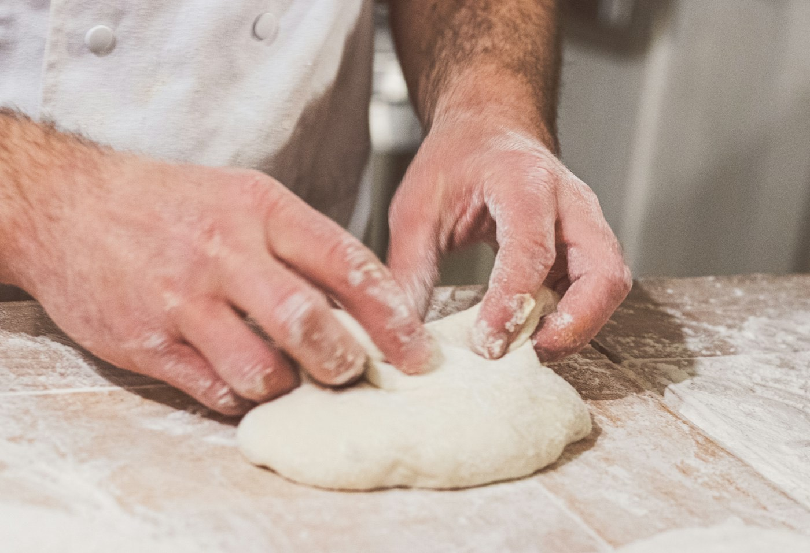
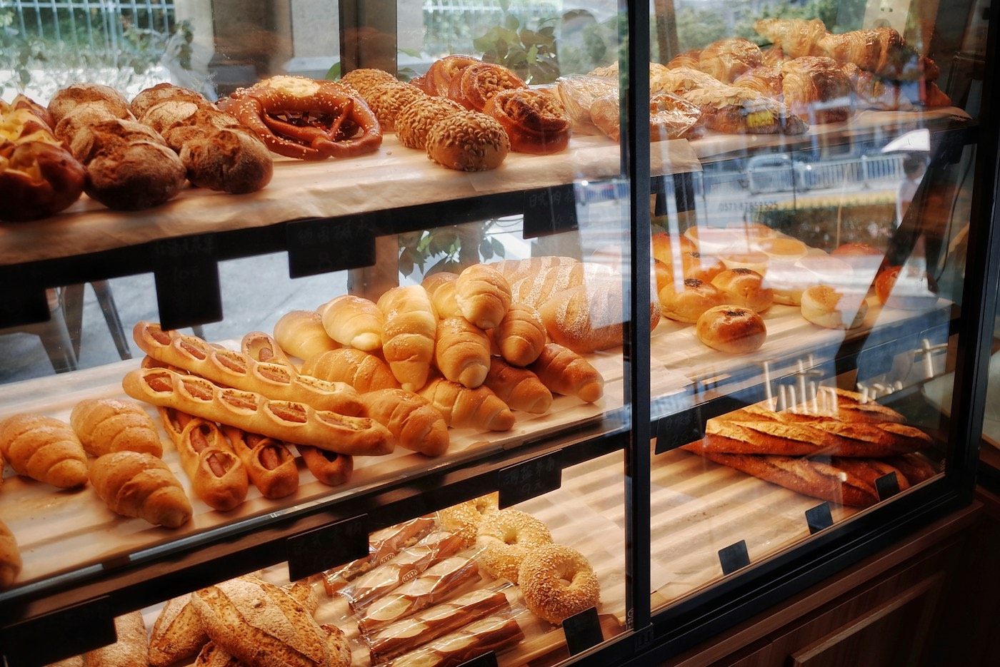

La boulangerie et son histoire
Une petite boutique de quartier, un levain qui a presque quarante ans. Histoire imaginaire, écrite pour ce site de démonstration.


Un levain, une famille
Tout commence par un pot de levain et un four d'occasion, en 1987.
Marie-Jo et Armel, personnages imaginaires, ouvrent la maison dans une ancienne mercerie. Ils veulent un pain qui a du goût et qui se garde, sans s'inquiéter de la mode.
Trente-cinq ans plus tard, le même levain nourrit toujours les pétrins. On le rafraîchit chaque soir, on le goûte, on lui parle un peu.
Quelques dates
- 1987
L'ouverture
Une vitrine, un comptoir, vingt baguettes à l'heure et un voisinage curieux.
- 1999
Le four à sole
Arrivée d'un four à sole en pierre, qui donne sa croûte à nos pains.
- 2012
Deuxième génération
La fille de la maison reprend la pâtisserie et lance le far breton aux pruneaux.
- 2024
Un fournil agrandi
Plus de place pour les levains, plus de place pour les gourmands.

Ce qui compte chez nous
Le temps
Des pâtes qui reposent la nuit, des levains qu'on ne brusque pas.
Les mains
Façonné à la main, enfourné à la pelle, vérifié à l'oreille : un bon pain chante en refroidissant.
Le quartier
On connaît les prénoms, les commandes et les anniversaires. C'est aussi ça, une boulangerie.